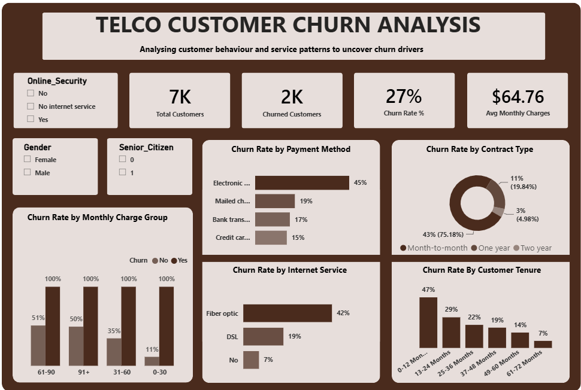

Churn is concentrated early in the customer journey.
Customers within their first 6 months showed a 53.33% churn rate, compared with 9.51% among customers with 49+ months of tenure.
PROJECT CASE STUDY
An end-to-end customer churn analysis exploring retention patterns across tenure, contracts, services, payment methods and customer segments.
01 — PROJECT OVERVIEW
Customer churn can have a direct impact on revenue, customer lifetime value and long-term business growth. This project focused on identifying the customer characteristics and service patterns associated with churn.
I worked through the dataset from preparation and validation to SQL analysis and interactive Power BI reporting, using the findings to identify customer segments that may require greater retention attention.
02 — BUSINESS QUESTION
The analysis was designed to answer questions such as:
At what stage of the customer lifecycle is churn most concentrated?
Which customer segments show stronger associations with churn?
Which contracts, services and payment methods show notable churn patterns?
What practical retention opportunities can be identified from the findings?
03 — ANALYTICAL APPROACH
Reviewed the dataset structure, customer attributes, service information and churn field.
Inspected the data for missing, inconsistent and invalid values before analysis.
Used SQL to explore churn patterns, customer segments and relationships across key variables.
Built an interactive Power BI dashboard to communicate the findings clearly.
Translated the observed patterns into practical customer-retention opportunities.
04 — POWER BI DASHBOARD

Interactive Power BI dashboard showing customer churn patterns across contracts, payment methods, internet service, tenure and monthly charges.
05 — KEY INSIGHTS
Customers within their first 6 months showed a 53.33% churn rate, compared with 9.51% among customers with 49+ months of tenure.
The month-to-month segment recorded a 42.71% churn rate, compared with 11.28% for one-year contracts and 2.85% for two-year contracts.
Churn was particularly high among month-to-month customers in their first 6 months (55.20%), fiber-optic customers on month-to-month contracts (54.61%), and month-to-month customers without technical support (50.37%).
Customers using electronic checks recorded a 45.29% churn rate, making the payment journey an area worth investigating further.
Fiber-optic customers recorded a 41.89% churn rate. This suggests that service experience, pricing, installation or support may warrant further investigation.
Churned customers had average monthly charges of $74.44, compared with $61.31 among retained customers. The pattern points to a need to investigate perceived value and customer experience rather than treating price alone as the cause of churn.
06 — BUSINESS RECOMMENDATIONS
Introduce proactive check-ins, service education and early issue resolution during the first few months of the customer relationship.
Prioritize retention efforts for combinations such as early-tenure and month-to-month customers, particularly where other risk indicators overlap.
Review pricing, installation, reliability, service quality and support experience among fiber-optic customers.
Evaluate whether customers without technical support have sufficient awareness and access to help when service issues occur.
Investigate possible billing friction, payment failures and customer experience issues associated with electronic-check payments.
For higher-charge customers, review the balance between pricing, service quality, benefits and overall customer experience.
07 — CONCLUSION
The analysis shows that customer churn is associated with several overlapping patterns, particularly early tenure, month-to-month contracts, selected service combinations and payment methods.
The strongest opportunity is therefore not simply to identify customers who churn, but to understand the customer journey behind those patterns and use the findings to guide targeted retention strategies.